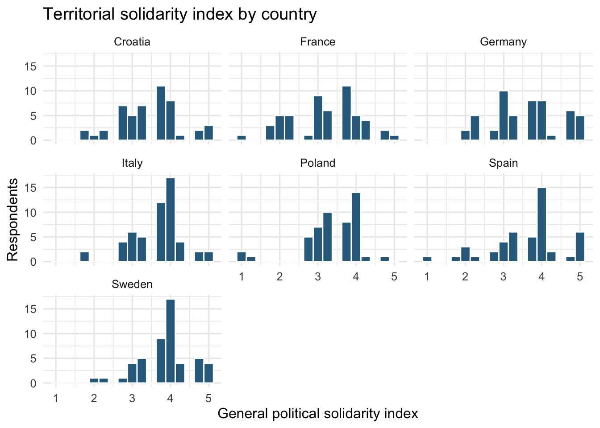
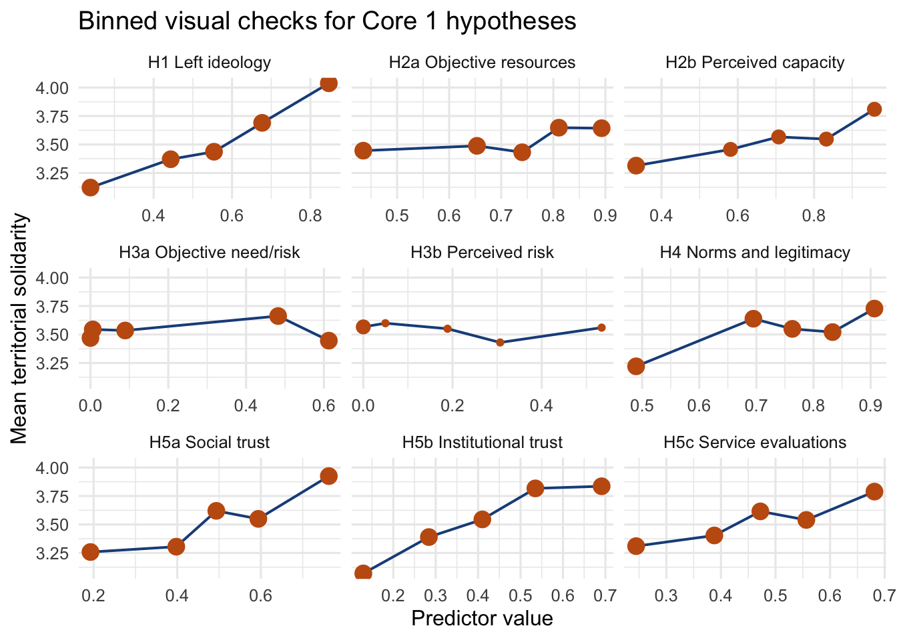
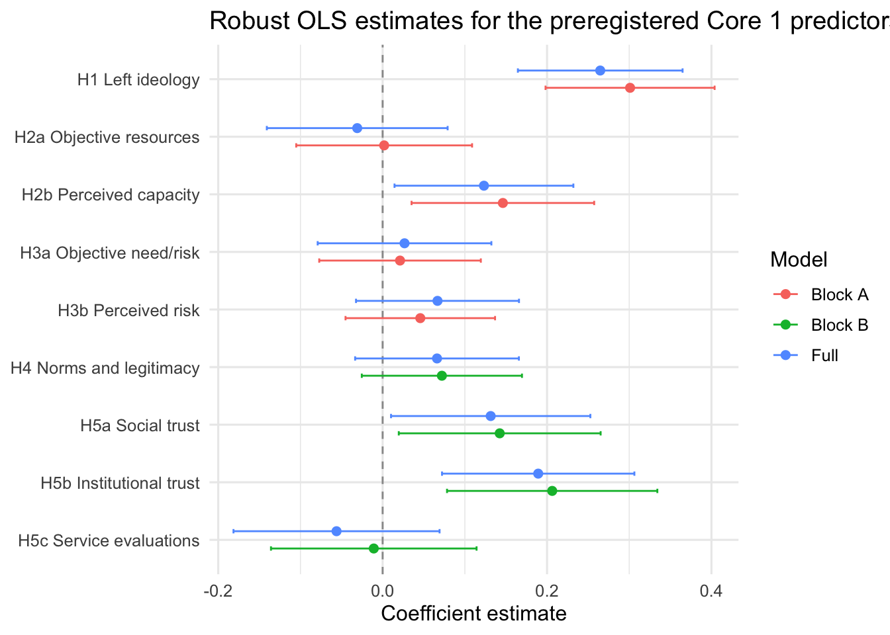

| hypothesis | status | proxy |
|---|---|---|
| H1 Ideology | Tested now | ideology_left_index |
| H2a Objective resources | Tested now | objective_resources_index |
| H2b Perceived capacity | Tested now | perceived_capacity_index |
| H3a Objective need/risk | Tested now | objective_need_index |
| H3b Perceived risk | Tested now | perceived_risk_index |
| H4 Norms and perceived contribution | Tested now | norms_legitimacy_index |
| H5a Generalized social trust | Tested now | social_trust_index |
| H5b Institutional trust | Tested now | institutional_trust_index |
| H5c Public-service evaluations | Tested now | service_quality_index |
| H6a Regional service quality | Not testable from current pilot file | Requires context file with regional_service_quality |
| H6b Relative regional prosperity | Not testable from current pilot file | Requires context file with relative_regional_income |
PEPS-Y Core 1: Pilot Hypothesis Checks
1 Setup
This report tests the hypotheses in preregs/core1_prereg against the pilot file POLITSOLID_Pretest_interim_11032026.sav. The pilot contains the individual-level survey items needed for most micro-level hypotheses, but it does not include design weights or the external regional indicators needed for the preregistered context models. Those hypotheses are flagged explicitly below.
The cleaned pilot sample contains 355 interviews across 7 countries. The main outcome is the preregistered territorial solidarity index, defined as the mean of the municipal, country, and EU willingness-to-pay items.
2 Outcome Distribution

3 Visual Hypothesis Checks
The plots below use quintile-style bins for each preregistered micro-level predictor. They are descriptive checks rather than substitutes for the regression models.

4 Main OLS Models
| model | term_label | estimate | conf.low | conf.high | p.value |
|---|---|---|---|---|---|
| Block A | H1 Left ideology | 0.301 | 0.198 | 0.404 | 0.000 |
| Block A | H2b Perceived capacity | 0.146 | 0.035 | 0.257 | 0.010 |
| Block A | H3b Perceived risk | 0.046 | -0.045 | 0.137 | 0.325 |
| Block A | H3a Objective need/risk | 0.021 | -0.077 | 0.119 | 0.674 |
| Block A | H2a Objective resources | 0.002 | -0.105 | 0.109 | 0.973 |
| Block B | H5b Institutional trust | 0.206 | 0.078 | 0.334 | 0.002 |
| Block B | H5a Social trust | 0.142 | 0.020 | 0.265 | 0.024 |
| Block B | H4 Norms and legitimacy | 0.072 | -0.025 | 0.170 | 0.148 |
| Block B | H5c Service evaluations | -0.011 | -0.136 | 0.114 | 0.866 |
| Full | H1 Left ideology | 0.265 | 0.165 | 0.365 | 0.000 |
| Full | H5b Institutional trust | 0.189 | 0.072 | 0.306 | 0.002 |
| Full | H5a Social trust | 0.131 | 0.010 | 0.253 | 0.035 |
| Full | H2b Perceived capacity | 0.123 | 0.014 | 0.232 | 0.027 |
| Full | H3b Perceived risk | 0.067 | -0.032 | 0.166 | 0.188 |
| Full | H4 Norms and legitimacy | 0.066 | -0.033 | 0.166 | 0.194 |
| Full | H3a Objective need/risk | 0.027 | -0.079 | 0.132 | 0.622 |
| Full | H2a Objective resources | -0.031 | -0.141 | 0.079 | 0.582 |
| Full | H5c Service evaluations | -0.056 | -0.181 | 0.069 | 0.381 |

5 Item-Level Ordered Logit Robustness
The preregistration also states that the territorial items should be checked separately. The models below use ordered logistic regressions with the full predictor set and the same controls.
| outcome | term_label | estimate | conf.low | conf.high | p.value |
|---|---|---|---|---|---|
| plsolcntry | H1 Left ideology | 0.575 | 0.307 | 0.849 | 0.000 |
| plsolcntry | H5b Institutional trust | 0.389 | 0.052 | 0.729 | 0.024 |
| plsolcntry | H2b Perceived capacity | 0.370 | 0.080 | 0.662 | 0.013 |
| plsolcntry | H5a Social trust | 0.313 | 0.017 | 0.611 | 0.039 |
| plsolcntry | H4 Norms and legitimacy | 0.271 | 0.025 | 0.513 | 0.029 |
| plsolcntry | H3b Perceived risk | 0.183 | -0.079 | 0.447 | 0.173 |
| plsolcntry | H3a Objective need/risk | 0.069 | -0.218 | 0.356 | 0.638 |
| plsolcntry | H5c Service evaluations | -0.194 | -0.519 | 0.128 | 0.239 |
| plsolcntry | H2a Objective resources | -0.205 | -0.495 | 0.083 | 0.163 |
| plsoleu | H1 Left ideology | 0.932 | 0.670 | 1.203 | 0.000 |
| plsoleu | H5b Institutional trust | 0.545 | 0.225 | 0.870 | 0.001 |
| plsoleu | H2b Perceived capacity | 0.402 | 0.134 | 0.673 | 0.003 |
| plsoleu | H5a Social trust | 0.283 | 0.005 | 0.564 | 0.047 |
| plsoleu | H3b Perceived risk | 0.178 | -0.070 | 0.427 | 0.160 |
| plsoleu | H4 Norms and legitimacy | -0.009 | -0.240 | 0.225 | 0.942 |
| plsoleu | H3a Objective need/risk | -0.067 | -0.332 | 0.197 | 0.619 |
| plsoleu | H2a Objective resources | -0.134 | -0.403 | 0.133 | 0.328 |
| plsoleu | H5c Service evaluations | -0.211 | -0.523 | 0.100 | 0.184 |
| plsolmuni | H1 Left ideology | 0.696 | 0.425 | 0.975 | 0.000 |
| plsolmuni | H4 Norms and legitimacy | 0.323 | 0.066 | 0.577 | 0.013 |
| plsolmuni | H5b Institutional trust | 0.314 | -0.028 | 0.658 | 0.072 |
| plsolmuni | H2b Perceived capacity | 0.290 | 0.002 | 0.580 | 0.049 |
| plsolmuni | H3a Objective need/risk | 0.191 | -0.095 | 0.478 | 0.191 |
| plsolmuni | H5a Social trust | 0.177 | -0.115 | 0.471 | 0.236 |
| plsolmuni | H3b Perceived risk | 0.114 | -0.142 | 0.374 | 0.386 |
| plsolmuni | H2a Objective resources | 0.088 | -0.190 | 0.365 | 0.535 |
| plsolmuni | H5c Service evaluations | -0.064 | -0.383 | 0.255 | 0.696 |
6 Optional Context Models
These hypotheses require an external region-level file, because the pilot .sav does not contain objective regional service quality or relative regional prosperity variables.
Expected columns in context/core1_context.csv:
countryregionregional_service_qualityrelative_regional_income
| note |
|---|
| Context models were not run. Add context/core1_context.csv with country, region, regional_service_quality, and relative_regional_income to activate H6. |
7 Notes
- The pilot file does not include design or post-stratification weights, so all models here are unweighted.
- The pilot file also does not include the external contextual indicators named in the preregistration. The report therefore separates the micro-level tests from the not-yet-runnable macro-level tests.
- All results in this report should be read as pilot checks for coherence with the preregistered direction, not as final population estimates.